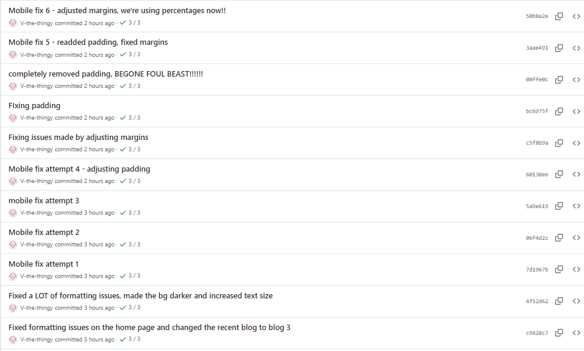

THE TERRIBLE TERRIBLE TALE OF TRYING TO FIX MOBILE SUPPORT FOR THIS DANG WEBSIIIIITE OOOOOOOOOO
out of EVERYTHING I have EVER done regaurding technology, this has got to be the MOST painful thing I have ever gone through. If you think I'm being over dramatic, then how about you look at THIS.

11 ATTEMPTS. IT TOOK 11 ATTEMPTS TO FIX THIS THING. FLIPFLOPPING E L E V E N A T T E M P T S. AND ALL THAT I NEEDED TO DO WAS CHANGE A FEW NUMBERS AND CHANGE A COUPLE OF "px"s TO "%"s. I will now tell you about my tale of woe in GRAPHIC DETAIL, consider it a halloween special if you may. MUWHAHAHAHAHAHAHAHAHA